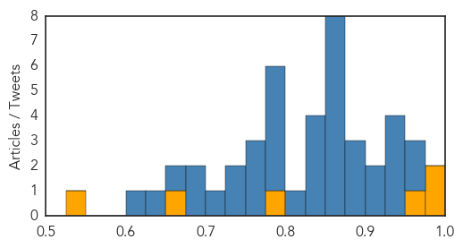
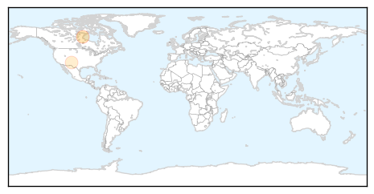

Ebola
30-Day Web Trend
3 alerts, 0 warnings
30-Day Twitter Trend
17 alerts, 1 warnings

Article Locations

Article Confidences
Top Articles:
- 1.000
- Health Aftereffects Plague Ebola Survivors
- 1.000
- As Ebola scare dies down in U.S., infectious disease preparations wane
- 0.967
- U.S Lawmakers Urge Increased U.S Response To Ebola
- 0.777
- Plan International Liberia Joins Ebola Fight, Donates Three Used Vehicles, Hundreds of Items Valued At $84,000.00
- 0.667
- Religion ‘Breakthrough’
- 0.526
- What's Killing the Children in Sierra Leone? Hint: It's Not Ebola
Top Tweets:
- 0.969
- Can we slow down the Ebola virus? - https://t.co/iNPGReaHk9 ebola
- 0.956
- [Health] Ebola - https://t.co/fFKjBY9XBV ebola
- 0.939
- Digital Illustration Of Ebola Virus In Colour Background - https://t.co/GreM7lV2PV ebola
- 0.933
- How To Prevent Manage and Treat The Ebola Virus (Re - https://t.co/49n0p8d3eb ebola
- 0.931
- EAC partners warned of Ebola outbreak during rainy season - https://t.co/Qqoh0YxOmJ ebola
- 0.927
- Ebola scare | Texas governor: children had contact with US Ebola patient - https://t.co/Qky3jxfU5w ebola
- 0.924
- Medical Research Offers Big Bucks if You Inject Yourself With Ebola Virus - https://t.co/tw5mf8wS0f ebola
- 0.916
- Study blocks ebola virus budding by regulating calcium signaling news - https://t.co/ZUdsbFgbnX ebola
- 0.900
- Ebola Vaccine Update - https://t.co/OWyIVJoFZU ebola
- 0.889
- Ebola wreaks havoc in Liberia - https://t.co/Kbxu4E4toW ebola
- 0.886
- Ebola hysteria in the US retrospect: The media US outbreaks and a global pandemic - Outbreak News Today https://t.co/51n1G6Q0G0 ebola EVD
- 0.872
- Donation of Supplies for Ebola Prevention in West African Schools - https://t.co/yaK9P9QsuQ ebola
- 0.868
- ebola - https://t.co/yYTileP8OV ebola
- 0.868
- Spec's Midrange Ebola (?) Smorc - https://t.co/a17sgL3FOe ebola
- 0.868
- Ebola survivors continue to face poor health - https://t.co/NyhJcG2D6s ebola
- 0.868
- Ebola Zombies Fullmovie - https://t.co/t9PrEBRBlh ebola
- 0.868
- Ebola Zombies FULLMOVIE - https://t.co/1mjhmMBpcf ebola
- 0.867
- What's Killing the Children in Sierra Leone? Hint: It's Not Ebola - https://t.co/LaDvOUyVbF ebola
- 0.850
- TheRaxxify| ebola much - https://t.co/BifEaxmRPg ebola
- 0.843
- Ebola Free Nurse - https://t.co/DNwH5aYPmk ebola
- 0.833
- Guinea: Newborn tests positive for Ebola despite healthy parents - https://t.co/ZJSOkMRQlQ ebola
- 0.832
- Ebola-chanya's Profile - https://t.co/M0H1sAC1gq ebola
- 0.832
- Ebola-chanya's Profile - https://t.co/BAQmyelUUP ebola
- 0.816
- Guidance for Arcadia Staff Intending to Travel to or Returning from Ebola Affected Countries - https://t.co/PIo79BdAJx ebola
- 0.799
- fake-ebola - https://t.co/Y9i1uQodbw ebola
- 0.794
- Ebola vaccine and corporate responsibility. - https://t.co/v6ym18xuHr ebola
- 0.792
- EBOLA and the PLAGUE sprayed on spider webs by UK MoD - https://t.co/YUIiO3Z02b ebola
- 0.778
- serveme.tf - CR4FTY vs EBOLA - https://t.co/AG9VgC8cvN ebola
- 0.777
- WMNOVergnault published MoD to use spiders to test lifespan of weaponised Ebola - https://t.co/qfQrWcjgax ebola
- 0.774
- Ebola hysteria in the US retrospect: The media US outbreaks and a global pandemic - https://t.co/qYOzxp7CNU ebola
- 0.759
- Ugandan scientist develops Ebola test kit - https://t.co/qZNMxTSDU0 ebola
- 0.751
- Deforestation 'may have started west Africa's Ebola outbreak':... https://t.co/blDCrGTFZJ
- 0.728
- Second Ebola test on Lisbon transit passenger comes back negative - https://t.co/cnteN4zLJc ebola
- 0.727
- remake joshua dun Tyler Joseph got Ebola? - https://t.co/D4ytEu7ZFY ebola
- 0.721
- Second Ebola test on Lisbon transit passenger comes back negative - The Portugal News https://t.co/MdcfWXVqeX ebola EVD
- 0.682
- Military Scientists Spray Spider Webs With Ebola And The PLAGUE - https://t.co/rXElNLILfx ebola
- 0.676
- why usa/Europe government dont use ebola virusto control imigrants and terrorists? - https://t.co/2yWGxIzlpm ebola
- 0.656
- Ebola V1 Black Ops 2 Gsc Mod Menu Pc Only - https://t.co/uhbLFERhdd ebola
- 0.637
- UK Ebola nurse Pauline Cafferkey 'in critical condition' - BBC News - https://t.co/w7YOPakcim ebola
- 0.617
- Lusa - Business News - Portugal Second Ebola test on Lisbon transit passenger comes back ... - https://t.co/RknNqh8t0Z ebola
Pertussis
30-Day Web Trend
0 alerts, 0 warnings
30-Day Twitter Trend
1 alerts, 0 warnings
Article Locations
Article Confidences

Top Articles:
Top Tweets:
-
No tweets found for Nov 01, 2015